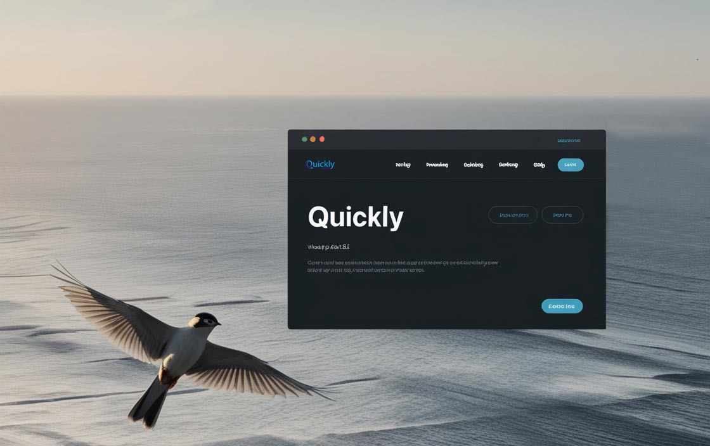

Ligero y rápido 🕊️
Ligero como un pájaro y sorprendentemente rápido, Quickly es tu nuevo framework CSS GRID. Perfecto para desarrollar diseños ágilmente sin sacrificar rendimiento. Dale a tus proyectos la velocidad y flexibilidad que merecen con Quickly.
🌟💨¡Transforma tu desarrollo web hoy!
DOCUMENTACIÓN